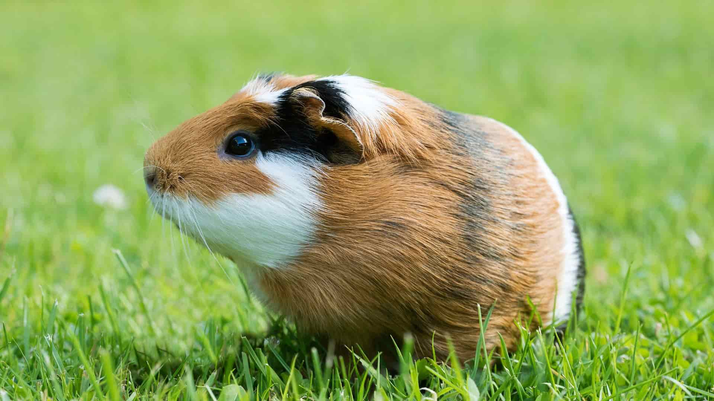
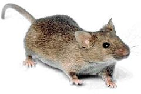
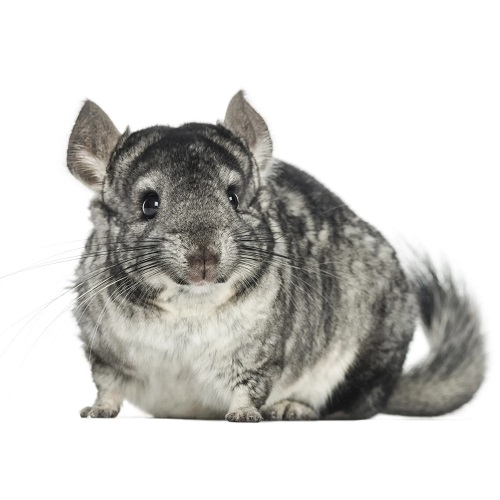
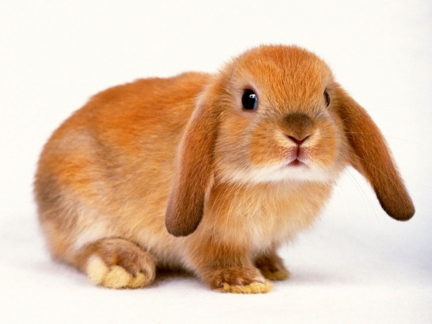

-
נחש

הצפע מצוי הוא נחש ארסי נפוץ במרכז ובצפון ישראל, וגם בסוריה, בירדן ובלבנון. הוא פעיל בעיקר בלילה, אך לעיתים פועל גם בשעות היום. בישראל, הוא אחד מתשעת הנחשים הארסיים הבולטים ביותר.
-
סוס פוני

פוני הוא זן סוס ביתי קטן שגובהו הזכרים אינו עולה על 1.47 מטר. הם מפורסמים בעור עבה וכבד, רגליים קצרות, עצמות כבדות, ראש קצר ומצח רחב. הם מתקיימים כאנשי חיים אינטליגנטיים.
-
צב

צב יבשה הוא המין השכיח ביותר בישראל, צבעו חום-צהבהב ואורכו עד 25 ס"מ. מתגורר במקומות עם צמחייה או סלעים, ובחורף מתחבר בקרקע. יכול לחיות עד כ-60 שנה, ומזוןו מכיל בעיקר עלים וגם תולעים וחרקים קטנים.
-
איגואנה

איגואנה מצויה היא זוחל שמגיע בעיקר מאמריקה הדרומית והמרכזית. היא מגיעה לאורך של כ-1.66 מטרים ומשקל של כ-10 קילוגרם, אך בשביה יכולה להגיע לאורך של כ-2 מטרים ויותר. אורך חייה בטבע עשוי להגיע עד חמישה עשר שנה.
-
שרקן
אורך גופו של שרקן בוגר מגיע עד 20 סנטימטר וצבע פרוותו חום, כתום, לבן, אפור, שחור או שילוב של צבעים אלה. לשרקן אין זנב. בגפיים האחוריות יש לו שלוש אצבעות ובקדמיות -ארבע.
-
עכבר
עכבר הוא יונק קטן מסדרת המכרסמים, מצוי בכמעט כל העולם וחי בקרבת האדם. אורכם משתלב בין 9 ל־12 ס"מ, עם גופם מכוסה בפרווה חום עד לבן וצמחוניים לרוב, אך יכולים לאכול כל סוגי המזון.
-
צ'ינצ'ילה
צ'ינצ'ילה, מכרסם קטן מדרום אמריקה, חי בקבוצות ומשפחות בסביבת סלעים והרים, משדרת צלילים וחריקות לתקשורת, בעלת יכולות אתלטיות ותוחלת חיים בין 15 ל-20 שנה.
-
תוכי

התוכי ג'אקו, הידוע גם בשם 'אפור אפריקאי', נחשב לחייב קל לאילוף ומשתלב טוב עם תוכים אחרים, עם תוחלת חיים של עד 60 שנה, יכולת דיבור מעולה, אך דורש תשומת לב רבה.
-
ארנב
לארנבון יש ארבע שיניים חותכות וחדות, שניים למעלה ושניים למטה, ושני שיניים נוספות למעלה מאחורי השיניים החותכות. יש להם אזניים ארוכות, רגליים אחוריות גדולות, וזנב קצר ופלומתי.
-
כלב

הגולדן רטריבר הוא כלב נפוץ ואהוב בישראל, עם מבנה גוף אתלטי ופרוות זהובה. הוא פעיל, נעים וקל לאילוף, מתאים לשחק ומתפקד היטב בסביבה משפחתית, ומתאים לתפקידים כמסייע תרפיה ונחייה.